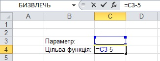
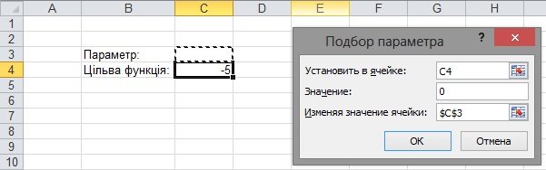

Використання засобу Підбір параметра
У багатьох задачах певний результат є відомим, а от значення параметрів, за яких цей результат досягається, – ні. Як приклад можна навести задачу, у якій потрібно визначити, через скільки годин скисне молоко або за якого обсягу випуску продукції фірма отримає прибуток у 1 000 000 грн. У математиці клас таких задач є найширшим. Це, зокрема, задачі на розв'язання алгебраїчних рівнянь та нерівностей або на пошук екстремумів.
У всіх подібних задачах використовується поняття цільової функції – вона має досягти певного значення або оптимізуватися (мінімізуватися чи максимізуватися). В електронній книзі формулу обчислення цільової функції записують у певну клітинку, яку також називають цільовою. Цільова функція залежить від параметрів (часто – від одного параметра), значення яких зберігаються в інших клітинках електронної таблиці. Власне кажучи, задача полягає у підборі таких значень параметрів, за яких у цільовій клітинці буде отримано бажаний результат.
У табличному процесорі Excel є спеціальні засоби, які автоматично підбирають потрібні значення у клітинках параметрів. Вони називаються Підбір параметра та Пошук розв'язку. Перший із них дозволяє отримати в цільовій клітинці певне значення, а другий – оптимізувати значення цільової функції. Використовувати засіб Підбір параметра ми навчимося в цьому розділі, а Пошук розв'язку – в наступному. Отже, засіб Підбір параметра застосовують так.
- В одну з клітинок електронної таблиці слід увести формулу цільової функції. Це буде цільова клітинка (на рис. 6.3 – клітинка С4).

Рис. 6.3. Цільова клітинка - Далі необхідно виконати команду Дані
 Робота з даними Підбір параметра та заповнити поля у вікні, що відкриється (рис. 6.4):
Наприклад, на рис. 7.1 параметр міститиметься у клітинці СЗ, і якщо в цільовій клітинці С4 потрібно отримати значення 0, вікно Підбір параметра слід заповнити так, як на рис. 7.2.
Робота з даними Підбір параметра та заповнити поля у вікні, що відкриється (рис. 6.4):
Наприклад, на рис. 7.1 параметр міститиметься у клітинці СЗ, і якщо в цільовій клітинці С4 потрібно отримати значення 0, вікно Підбір параметра слід заповнити так, як на рис. 7.2.- поле Установити у клітинці має містити адресу цільової клітинки;
- у поле Значення слід ввести значення, якого має набути цільова функція;
- у поле Змінюючи значення клітинки слід увести адресу клітинки-параметра.

Рис. 6.4. Вікно Підбір параметра - На завершення потрібно клацнути кнопку ОК. У цільовій клітинці буде відображено значення, якого має набувати цільова функція, а в клітинці параметра – шукане значення параметра.
Наприклад, на рис. 6.5 показано, як у клітинці СЗ знайдено значення параметра (число 5), за якого цільова функція у клітинці С4 набуває значення 0. Тобто фактично розв'язано рівняння х - 5 =0.
Рис. 6.5. Результат підбору параметра
ПРИМІТКА. Підбір параметра майже завжди дає наближені значення результату. Тому, якщо в клітинці параметра після його підбору виводиться число 4,99999, то, скоріш за все, справжнім розв'язком задачі є число 5.
Використовуючи засіб Підбір параметра, клітинку параметра можна залишити порожньою, однак бажано попередньо визначити деяке початкове значення, адже від цього залежить швидкість отримання результату (особливо коли йдеться про складні цільові функції), а у деяких випадках і сам результат. Якщо цільова функція складна, може виникнути ситуація, коли не одне, а кілька значень параметра відповідають її шуканому значенню. Яке з них буде знайдено, залежить від початкового значення в клітинці параметра. У таких випадках, перш ніж підбирати параметр, доцільно побудувати графік цільової функції, щоб визначити початкове значення параметра наближено.